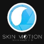
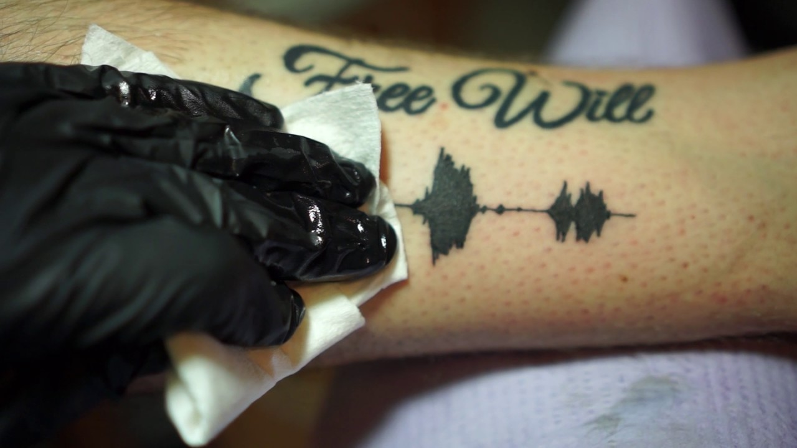

WEARABLE
CHALLENGE
RESEARCH
Dit is het research gedeelte van de wearable challenge. Ik heb drie dingen onderzocht die te maken hebben met een wearable. De drie dingen zijn: ‘SGNL’, ‘DTing’ en ‘Soundwave tattoo’. Als je op de logos klikt van de bedrijven kom je op hun websites terecht.
SGNL
Soundwave tatoeages zijn tatoeages die op een applicatie teruggeluisterd kunnen worden. Je neemt een tatoeage, maakt niet uit welke inkt, van een stuk geluid. Dit geluid wordt op de huid getatoeëerd en in de Skin Motion app teruggeluisterd. Naast de Skin Motion app kan je natuurlijk ook nog vele andere applicaties gebruiken, vrijwel alles dat een soundwave plaatje kan omzetten tot een daadwerkelijk geluid. De eerste tatoeage die teruggeluisterd kon worden was in 2017 gemaakt door Nate Siggard.
Een soundwave tatoeag eis een wearable die voor altijd op je huid zit, tenzij je het eraf lasert natuurlijk. Deze wearable kan mensen hun favoriete stuk muziek laten afspelen of geluiden die erg emotioneel zijn voor mensen. In sommige gevallen hebben mensen de laatste voicemail van hun geliefde of ouders die dood zijn gegaan omgetoverd tot een tatoeage die ze voor altijd bij zich hebben. Dit kan emotionele support geven aan de eigenaar van de tatoeage en vind het een originele manier van tatoeages.
Video die laat zien hoe het werkt:
Introductievideo SGNL
DTing
DTing is een polsbandje waar objecten, zoals een drone en een speelgoed tank, mee bewogen kan worden. De drone als voorbeeld nemend, aan de hand van de bewegingen van je hand beweegt de drone mee. Het werkt alleen als je jouw hand in een pistool formatie zet (duim omhoog, wijsvinger die aanwijst en de andere vingers tegen de handpalm aan houden).
Een polsbandje die de richting aangeeft waar een drone (of andere voorwerpen) naartoe moeten is erg innovatief en makkelijker te gebruiken dan een game console. Je houdt hiermee allebei de handen vrij en kan alsnog het ergens naartoe sturen. Deze technologie kan goed gebruikt worden om plekken te scannen en de drone sneller van richting te laten veranderen. Zeker voor het leger zou dit handig zijn.
Video die laat zien hoe het werkt:
Introductievideo SGNL

 Soundwave Tattoo
Soundwave tatoeages zijn tatoeages die op een applicatie teruggeluisterd kunnen worden. Je neemt een tatoeage, maakt niet uit welke inkt, van een stuk geluid. Dit geluid wordt op de huid getatoeëerd en in de Skin Motion app teruggeluisterd. Naast de Skin Motion app kan je natuurlijk ook nog vele andere applicaties gebruiken, vrijwel alles dat een soundwave plaatje kan omzetten tot een daadwerkelijk geluid. De eerste tatoeage die teruggeluisterd kon worden was in 2017 gemaakt door Nate Siggard.
Een soundwave tatoeage is een wearable die voor altijd op je huid zit, tenzij je het eraf lasert natuurlijk. Deze wearable kan mensen hun favoriete stuk muziek laten afspelen of geluiden die erg emotioneel zijn voor mensen. In sommige gevallen hebben mensen de laatste voicemail van hun geliefde of ouders die dood zijn gegaan omgetoverd tot een tatoeage die ze voor altijd bij zich hebben. Dit kan emotionele support geven aan de eigenaar van de tatoeage en vind het een originele manier van tatoeages.
Video die laat zien hoe het werkt:
Introductievideo SGNL
